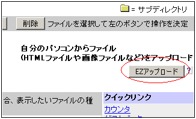
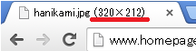
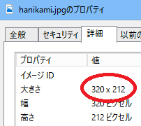
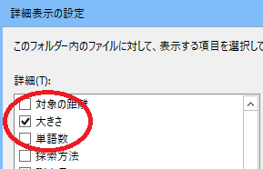
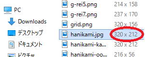
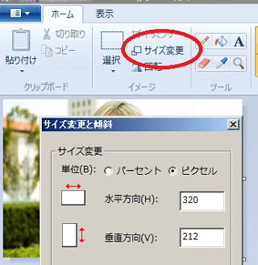
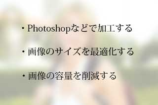

ホームページに画像の貼り方
ホームページに画像を貼り付ける際は、<img src=のHTMLタグを使って貼り付けます。
こちらのようなHTMLタグになります。
<img src="http://画像のあるURL" alt="画像の説明" width="幅" height="高さ" border="外枠のありなし">
ここでは実際の貼り付け手順をご紹介します。
■画像のアップロード
まず最初にやることはホームページスペースへの画像のアップロードです。
画像は「image」や「img」などのフォルダを作成し、HTMLファイルとは区別してまとめて管理しておくとよいでしょう。
ジオシティーズの場合はEZアップロードのボタンを押し、参照ボタンで自分のパソコン内にある画像を指定すれば簡単にアップロードすることができます。あるいは、FTP接続でアップロードすることもできます。

レンタルサーバーでも、ファイルマネージャーやFTP接続でアップロードできます。
■画像のURL
次に、表示ボタンを押してアップロードした画像のみを実際に表示します。
すると、その画像の「URL」と「大きさ」を確認できます。
上のHTMLタグで「画像のあるURL」の箇所については、ブラウザに表示されているURLをそのままコピペして貼り付けます。
例えば、このページではこちらのURLの画像を使用しています。
https://www.homepage-tukurikata.com/image/hanikami.jpg
このURLを<imgタグにそのまま貼り付けます。
■画像の大きさ
画像の大きさについてですが、IEでは画像上で右クリックをして「プロパティー」の箇所で幅と高さを調べることができます。この場合、「320px × 212px」と確認できます。また、Edgeでは右クリックで「cortanaに質問」、chromeやfirefoxでは、画像のみを表示させればブラウザのタブ上に表示されているはずです。

ちなみに、パソコン上で確認する場合は、画像を右クリックして「プロパティー - 詳細 - 大きさ」で確認できます。

あるいは、画像の大きさを一覧表示で確認したい場合は、右クリックの「表示 - 詳細」で一覧表示させ、さらに「並べ替え - その他」で「大きさ」を指定します。

すると、pxでの大きさを一覧で確認することができます。

いずれの方法でも画像の大きさが「320px × 212px」とわかりますので、上記のHTMLタグの「width」の箇所に320、「height」に212などと記入します。この際、width="320" height="212" のようにpxを付けないで記入しましょう。
■画像の説明文
alt属性にその画像の説明を簡単に記載します。これは画像が表示されなかった際、ここに記載されたテキストが表示されます。この説明文を記述しておくと検索エンジンの画像検索などでもヒットしやすくなります。
■外枠のあり・なし
「border="0"」で指定すると「外枠なし」となり、「border="1"」などと記入すると外枠が1pxで表示されます。
ここまでを上のタグに記入すると、出来上がりのhtmlタグはこのようになります。
<img src="https://www.homepage-tukurikata.com/image/hanikami.jpg" alt="リュックを持ったハニカミ女子" width="320" height="212" border="0">
これをHTMLファイルに貼りつけると、実際に表示される画像はこのようになります。
画像の種類と容量
サイト上で画像を使用する際、「bmp」は容量が大きいのでウェブ素材には適しません。できれば「png」、もしくは「jpg」や「gif」を選択するのがよいでしょう。
「jpg」はデジカメなどで撮影した写真素材、「gif」は動きのあるアニメーション画像や色数の少ない単色の画像に最適ですが、一般的には「png」にしておくのがぶなんです。
あまりに容量が大きく、サイトの表示が遅くなってしまう場合、検索エンジン対策には不利といわれています。そのため、容量が大きい場合は圧縮をするなどして、画質を落とさずに画像の容量を削減するとよいでしょう。
■Pタグでくくる
画像の上下左右の間隔については、スタイルシートでも調整できますが、段落分けのPタグでくくっておくと上下の間隔が自然になるはずです。
上の例でいえば、このようになります。
<p><img src="https://www.homepage-tukurikata.com/image/hanikami.jpg" alt="リュックを持ったハニカミ女子" width="320" height="212" border="0"></p>
画像を中央に寄せる際は、このPタグに「text-align:center;」を指定しておくとよいでしょう。
<p style="text-align:center;"><img src="https://www.homepage-tukurikata.com/image/hanikami.jpg" alt="リュックを持ったハニカミ女子" width="320" height="212" border="0"></p>
■CSS側での設定
上記の「border="外枠のありなし"」については、CSS側で設定しておけば記載する必要がなく、全ての画像に一括で適用されます。CSSで画像のデザインを一括で指定する際には、img {ほにゃらら}の箇所で指定します。
外枠の色はデフォルトでは黒のため、灰色などに指定しておくのがぶなんかもしれません。
例えば、色が#ccccccの1pxの実線で指定する際は以下のようになります。
img {
border: solid 1px #cccccc;
}
外枠なしの場合はCSSに以下のように記載します。
img {border: 0;}
CSSで全ての画像に一括で指定するのではなく、その画像のみに適用させたい場合、style属性で以下のようにHTMLタグに直接指定するとよいでしょう。
<img src="http://" alt="" width="" height="" style="border: solid 1px #cccccc;">
■回り込みの指定
回り込みを指定する場合には、以下のように指定します。
<img src="" alt="" width="" height="" align="left" hspace="左右の余白" vspace="上下の余白" border="0" />
align="left"やalign="right"で左や右に回りこませ、左右の余白を15pxとるにはhspace="15"などと記述します。
回り込みを解除する箇所では、改行タグを使い、以下のようにclear="all"を指定しておくとぶなんでしょう。
<br clear="all" />
この回り込みの解除を指定しておかないと崩れますのでご注意ください。
この左右上下の余白についてですが、hspaceやvspaceは左右の両方に適用されてしまいます。右の余白のみ10px空けたいなどの場合、hspaceなどは使わずに、style属性で次のように指定するとよいかもしれません。
<img src="" alt="" width="" height="" align="left" style="padding:0px 10px 0px 0px;" border="0" />
こちらについても、解除する箇所でclear="all"を指定しておきます。
<br clear="all" />
■スマホへの対応
レスポンシブウェブデザインでスマホにも最適化している場合、一般的なスマホのデバイス幅は320px～375px程度しかないため、それよりも大きい画像を貼りつけるとデザインが崩れてしまう可能性があります。そのため、スマホ用のCSS側でmax-width: 100%;などを指定し、デバイス幅まで縮小させることをおすすめします。
サイズが大きい場合には、Windows付属のペイントなどのツールでも縮小することができます。画像を「右クリック - 編集」を選択すれば、ペイントが起動するはずですので、サイズを変更するとよいでしょう。

変更したあとは、メニューの「名前を付けて保存」からjpgやpngなどファイル名を選択して保存します。
ただし、最近は構造化データで使用する画像で1200px程度の大きさが推奨されており、今後、画像サイズを大きく変更する必要が出てくるかもしれません。撮影した画像の元データはバックアップしておくことをおすすめします。
■ウェブ上で使える素材サイト
ちなみに、上の画像はドメインパーキングで有名なお姉さんですが、istockphotoで購入してきたものです。ホームページ素材については有料サイトなどから購入してくることができます。
→ ホームページ画像や素材のサイト
これらの素材については加工が許可されているケースが多いので、そのまま使用するよりも、Photoshopなどで加工してから使用することをおすすめします。
例えば、上の画像に文字などを入れて加工するとこのようになります。

ほか、ヘッダー部分を画像で表示させたりする際など、サイト全体のデザインに組み込む際にはスタイルシートの方で一括して指定されることをおすすめします。